Rigging a Figure in Blender
Introduction and Setup
Introduction
This document was created at a time when Blender 3.1 had just come out, so the steps taken were conducted in that version. However, the author of the video this document took its inspiration from was using v3.0 alpha. I’m pretty sure it should bwork even in v2.92 or v2.93.
To start off with: a caveat. This is not a definitive tutorial on rigging in Blender. This approach worked for me, and includes a few tips on how to overcome unexpected pitfalls. Your mileage may vary.
I have gone over this road too many times to count, with a ton of failures to show for it. The tools have become a bit easier to use, in the meantime, and the elusive satisfaction of a successful rigging has finally arrived. This document is to help others avoid some of the issues I ran into. A great video to watch on the suject - from which I drew my inspiration for this tutorial - is this one.
For this tutorial, may I suggest you go to CG Trader to download a free humanoid mesh, preferably one that is not rigged already. There are some good figures at CGTrader, some free and others at a ranges of prices. The description for that linked figure above claims the figure is rigged, but it is probably for 3DsMax, not Blender. You can also use a Poser figure, or indeed any humanoid figure saved in OBJ format.
By the way, I sometimes assume a certain amount of Blender knowledge, which may not be a good thing. If you wish more detail on certain points or see any corrections that need making, please leave me a note in my Github Issues page.
Import and Prep Work
Download and Unarchive - Organise
After unarchiving the downloaded files, I rename the folders to keep things organised. I customarily keep texture files in a ‘textures’ folder, the original downloads in an ‘Origs’ folder and the obj file in an ‘obj’ folder… thus:

Import The OBJ
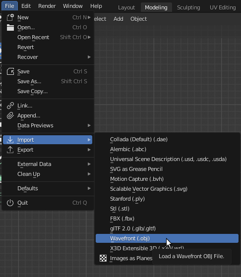
Open Blender and go into either modelling or layout viewport
Import the figure via File -> Import -> Wavefront(obj)
For the sake of simplicity I just accept the default settings and click OK
The Girl In Shorts will import at the correct scale. Note: Poser figures will need to be scaled up tenfold by selecting the figure expressly - changing the dark-orange outline to light-orange - and pressing [S], then entering the number 10.
Texture Your Figure
To put colour on the figure, I let Blender find the texture files for me:
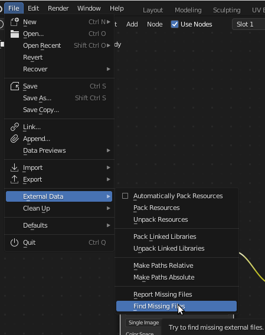by pointing the above search function to the textures folder.
Enable Rigify - and a few Checks to Do
The ‘Rigify’ addon comes with Blender: be sure you have it enabled:


Be sure the figure you are about to rig is set to a scale of 1. Select the figure - selection is indicated by an orange outline around the figure - press the [N] key, and confirm scale:
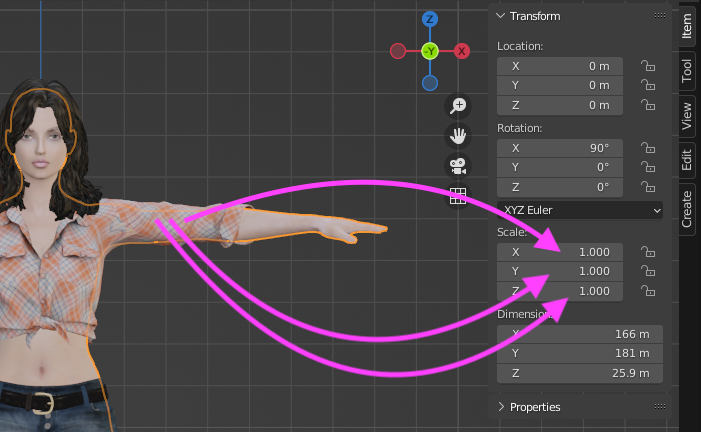If any other number than 1 is displayed for X, Y or Z, press [Ctrl] [A], and select ‘Scale’. a ‘1’ will appear in the X, Y and Z boxes.
The cursor needs to be at the “World Origin”. Press [Shift] [S] to bring up this pie menu:

Select ‘Cursor to World Origin. The cursor should be between the feet of the figure, which is where imported OBJs generally land.
Remove ‘Doubles’
Applying your rig will fail if vertices that occupy the same space are detected. Note: in the case of Poser figures, I have removed thousands.
For the sake of simplicity, I hide any part of the scene that I am not immediately working on:
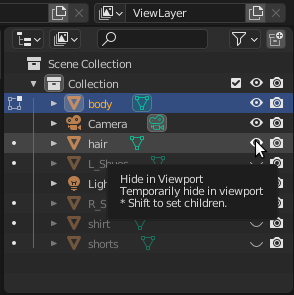[TAB] into Edit mode, check that you are in vertex mode (not face or edge), press [A] to select all vertices and from Mesh:
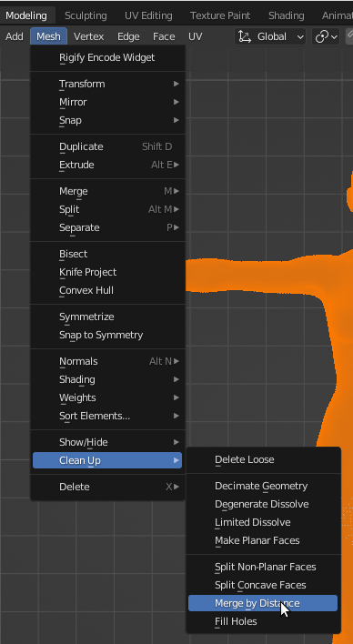On this figure, you’ll see a brief notification that 90 vertices were removed:
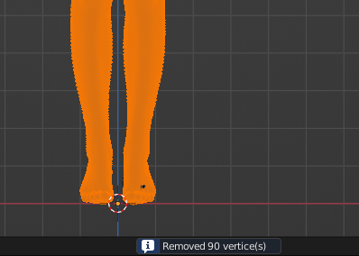The figure is now ready to accept a rig. Save your .blend file.
In order to make it a bit easier to go back to a previous step, I tend to do ‘Save As’ at ‘milestone’ points of the project: i.e., points where I’m satisfied all has gone well up to then and that would be a good start-over point in case things go to custard. So, I’ll name my file ‘GShortsPose01.blend’: the only thing that’s key here is the number.
Loading / Adjusting the Armature
Load the Armature
This tutorial recommends you start with the Basic Human (MetaRig), just until these steps become more familiar. Note: the rigging process itself is fairly labour-intensive and you would hate to have gone through hours of adjusting the rig only to have the whole thing go down the gurgler because of something that got missed. Happens more often than not.
Load the Rig - Get It ready
Press [Shift] [A] and select Armature -> Basic -> Basic Human (Meta-Rig):
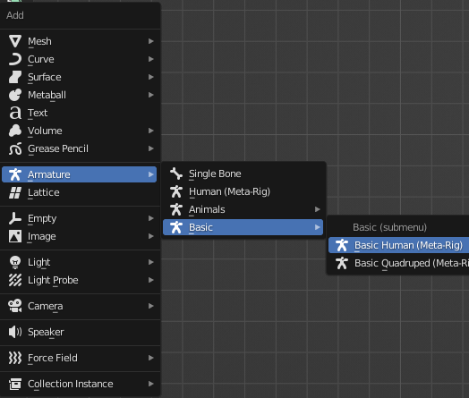I’ve scaled up the rig so that the shoulder/clavicle bones are roughly here:
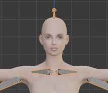Scaling for this figure is not a trivial endeavour. A quick way to get the rig close to her size is to press [S] and type 100. Then press [S] again and scale down to the desired height/size.
Note the scale of the rig:
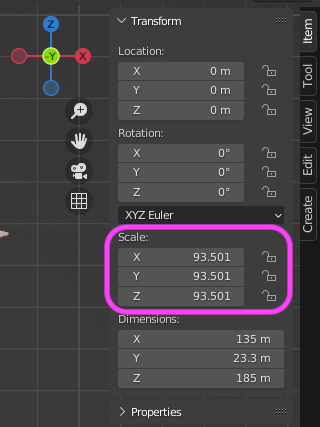To set the values to 1, press [Ctrl] [A], and select ‘Scale’.
Notice that a lot of the rig is hidden in the figure. You will want it to seem like it’s always in front of the figure:
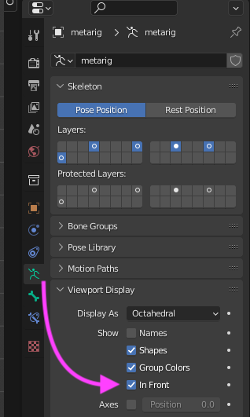Now is a good time to save. Typically, I’ll start ‘versioning’ here, so I can go back if I need to:
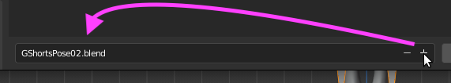When you ‘Save As…’, Blender will display the current file name with a red background. Click on the plus [+] will increment your filename… then just click [Save As].
Adjust the Armature
With the rig selected, press [TAB] to enter edit mode. To cut your work in half, click on the ‘X’ above the Transform tool box:
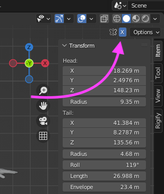Note: the ‘X’ is only visible - and tickable - in edit mode. Mirror mode will move rig components on the right (I generally work on the left) on symmetrical figures. Of course, if your figure isn’t symmetrical, you may not wish to use this feature.
This tutorial will not go into great detail on - or pretend to be a definitive source for - the finer points of rigging. What follows is just what I do. I try to keep things as “anatomically correct” in terms of having the rig sort-of play the role of the spine in order for deformations to look as natural as possible. I’m open to suggestions on improving this approach:
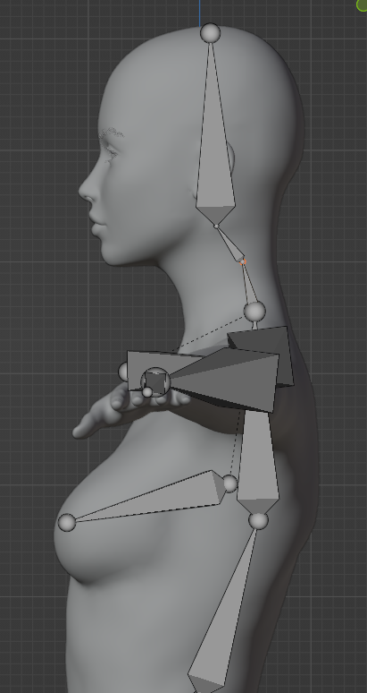 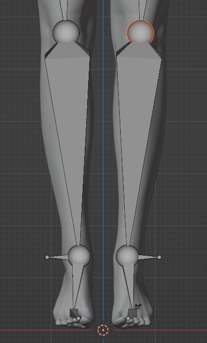 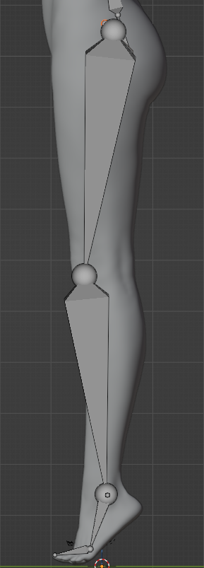 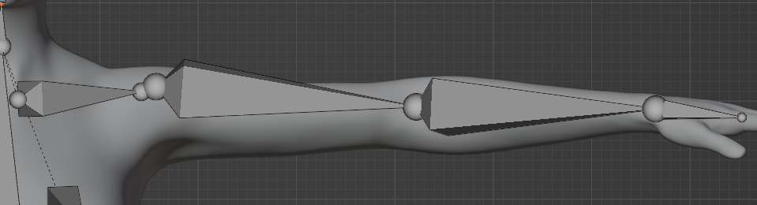Once you’re happy with the rig adjustments, [TAB] out of Edit Mode. Here, I would do an incremental Save (GShortsPose03.blend).
In the Object Data Properties panel for the metarig, press the [Generate Rig] button:
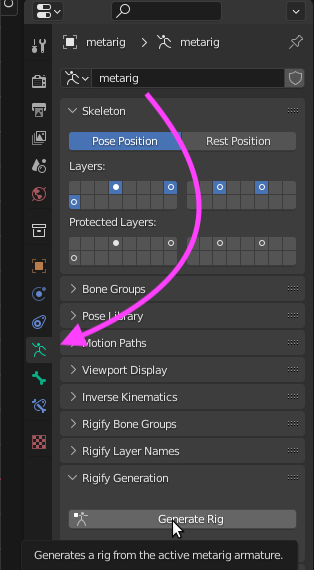which results in:
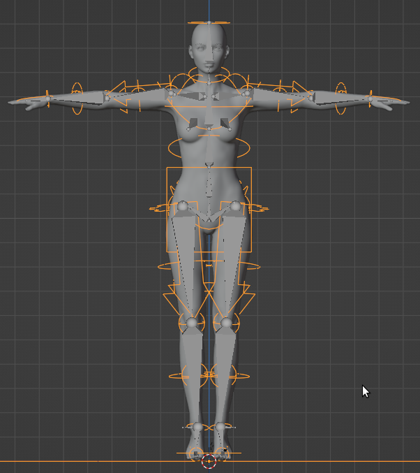Prepping for Parenting
Declutter / View New Bones
Hide the Original MetaRig
The scene is getting pretty busy. It’s real easy to click on things you don’t sort-of want to edit or do anything with, and one of those things is that original metarig. It’s time to hide it.
In Object mode, select the metarig, press [M] and create a New Collection. I’ll name mine ‘SaveRig’:

In the Outliner, untick this box:

Your original metarig should no longer be visible.
Hiding That New Rig for Now
In the Outliner you will notice that what surrounds your figure has a name: ‘rig’. Selecting it in Outliner will select it in the viewport. Our new rig isn’t doing anything for us except to get in the way - we’ll hide it. With that rig selected, go into Pose mode:
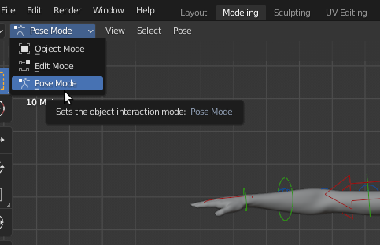
The rig is now multi-coloured. Just to keep things easy, we will hide it. Press [A] to select all parts of the rig -all parts will go to one colour - and press [H] to hide them.
Introducing New Bones
We need to see the newly generated bone set. Go back to the Data Properties panel. What we’re after is the Layers section. The visible layers are light-blue (on my system - yours might be different) and the non-visible ones grey. Holding down the [Shift] key - the [Shift] key is important, here! - click on the indicated layer:

{kind=link}
{kind=link}
Note: if you forgot to hold down the [Shift] key, you will deselect the other layers. Press [Ctrl] [Z] to undo, and try again.
Press [Z] and select ‘Wireframe’:
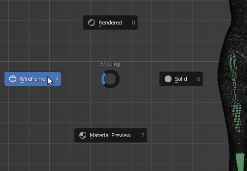
The new bones - called ‘deformation bones’ - are now clearly visible. According to Pixxo3D, these bones are actually weighted to the geometry of your figure.
Parenting our Rig
Get Ready to Parent
To parent, selecting in the right sequence is important. Also, this is a multi-select action.
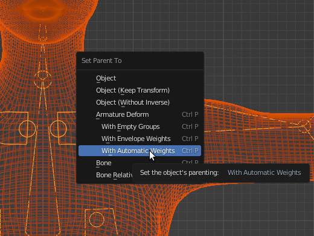
Go back to object mode.
Still in wireframe mode, select the mesh of our figure FIRST
Holding down the [Shift] key, select the deformation bones SECOND
Press [Ctrl] [P] ([Cmd] [P] on the Mac)
Select ‘With Automatic Weights’
The script should run - nothing will seem to happen. If the script fails, a notification will appear briefly in the status bar. The error can be reviewed in the console.
Hiding the Deformation Bones
Select the deformation bone set only
Go into Pose Mode
In the Data Properties / Layers section, (with [Skift] key held down) deselect that previously added layer - the deformation bones are no longer visible.
While still in Pose Mode, press [Alt] [H] to unhide your rig
Press [Z] and select ‘Solid’
After Parenting the Rig
In the case of our girl in shorts, parenting hair and clothing would be done with those same deformation bones we just hid. More importantly, before we endeavour to clothe our figure, checking our rigging by deforming our figure - moving bits about - is going to be hours and hours of:
delete the current rig
go back several versions (before Generate Rig)
adjust bone positions
Generate Rig, and all the steps above
check deformations
rinse and repeat
Final Thoughts
I can strongly recommend Pixxo3D’s channel on YouTube: he’s got quite a few amazing videos on a number of Blender-related topics.
I might append things I learn about this process here at the end. And, if anyone comments and are okay with me sharing those comments, include them here as well. Living documents are really the most useful, so I’ll try to keep viability through updating.
2202-04-01: Scale can Affect Things
I had originally gleaned the solution regarding the “Heat Weight Bones” issue from this page on StackExchange, i.e., the answer by Gaia Clary (54 upvotes at the time). However, that was before I tried rigging a V4.2 weight-mapped Poser character of mine: Charlotte. I’d actually been working with the Erogenesis set which rig beautifully in Blender after you remove some of the “Control” geometry and clean up doubles.
What working with the Erogenesis figures brought to light is that the V4 figure is, well, stretched out. As in: disproportionately tall. Unrealistic. It truly looks like someone took the body and just did a stretch. So, I did the opposite: I selected the body - just the body, the head, neck and arms are fine - to see if I could make things a bit more proportionate.
This is possibly where I ran into grief when I tried to rig. The mesh, already dense, was now a lot denser, and, according to Nathan on that same page, scale for high-density mesh can be an issue. So, I scaled up my figure ten-fold ([S] 10) and did the rigging process again. It worked, sort-of but not really: some of the control thingies now don’t actually move the corresponding body part.
So, we’ll see.
Hope this document proves useful to someone.